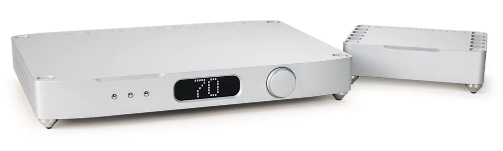

Wandler
The Discrete DAC
Der Einstieg in die MSB-Welt. Zwei Prime-DAC-Module liefern Detail, Bühne und Klangfarbe, verpackt in ein schlichtes Gehäuse aus Kalifornien.
- 2 × Prime DAC, voll symmetrischer Ladder-DAC
- PCM bis 3.072 kHz / 32 Bit, DSD bis 8×
- Koax, XLR, Word-Sync, 2 × Toslink, 2 Modulplätze
- XLR-Ausgang 3,57 V, 300 Ω
Silber eloxiertSchwarz eloxiert
Testhifitest.de